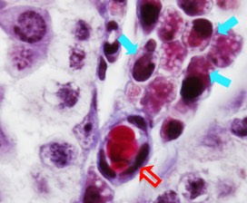
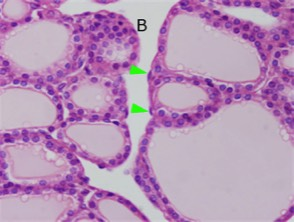
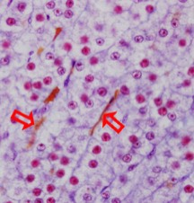

Endocriene klieren:
Wanneer endocriene kliercellen hormonen uitscheiden worden ze via het bloed vervoerd naar de regio’s waar ze hun functie uitoefenen. Om die reden zie je steeds rondom endocriene kliercellen bloedvaatjes liggen. De organisatie van klierweefsel en bloedvaatjes kan op verschillende manieren:

Groepjes endocriene cellen (pijlen) liggen in bindweefsel waar je veel bloedvaatjes (open pijl) kan terugvinden.

De organisatie van de schildklier is heel bijzonder, omdat schildklierhormoon kan opgeslagen worden in follikels. In het bindweefsel rondom de follikels tref je bloedvaatjes aan, waarvan je hier de kernen van de endotheelcellen (pijlpunten) kan zien.

Endocriene kliercellen liggen in strengen tussen de bloedvaatjes (open pijlen).